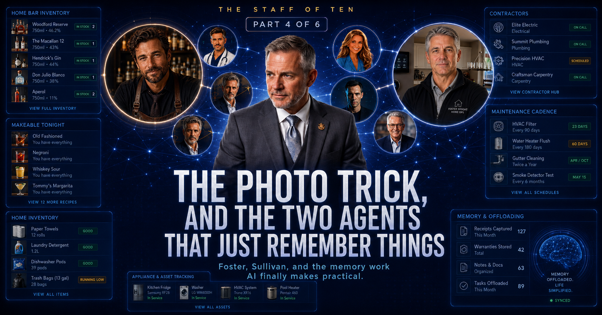

Nobody was ever going to inventory my embarrassingly large collection of liquor into a spreadsheet by hand. That's the point.

Be honest. You have a project like my liquor cabinet. Some corner of your life — a shelf, a garage, a filing drawer — that you've been meaning to "get organized" for years, and never will, because cataloging bottles into a spreadsheet by hand is a miserable job with a payoff that never quite justifies the evening.
Here's what that job looks like now: I took photos of the shelves and sent them to the AI. It read the labels, sorted everything into categories, and handed back a structured inventory. Practically overnight.
The first pass still gets spot-checked — AI can misread a label or invent confidence it has not earned — but the difference is that I am correcting a draft instead of starting from zero.
That's the theme of this piece. The last two parts were about drama — a business, a trading account. These two agents will never make me a dollar or lose me one, and they're the ones I'd give up last, because they attack the real problem of adult life: not intelligence, memory. And they do jobs that weren't hard before AI — they were simply never going to happen. That's the unlock that gets me excited about this technology. Making the impractical practical.
The bottle inventory feeds Sullivan — the roster's one unapologetically indulgent name, because a home bar should have a bartender, not a "beverage-inventory module." He knows the ninety-odd bottles on my shelves and about eighty cocktail recipes, and the trick is the intersection: the question a home bar actually poses on a Friday night isn't "how do I make a Negroni." It's "what can I make right now, with what's open, without a store run?" That's a matching problem across two lists, and humans rarely do well by memory.
Sullivan just answers. What's makeable tonight. What I'm one bottle away from. Which bottle to buy next to unlock the most new drinks. Which of the fourteen low-stock bottles actually matter. He even keeps the taxonomy honest — bourbon is not "whiskey," rye and Scotch and Irish each stand on their own — because if you're going to build the nerdy tool, build it right.
Is this a serious use of AI? No. It's a serious demonstration of the idea underneath the whole staff: an agent holding a real-world inventory and answering the practical question you actually have, instantly, without you doing the tedious cross-referencing. The bar is just the friendliest possible proof.
Now the serious version. A house is a small business that generates no revenue and constant liabilities, and it runs on facts nobody can keep in their head. What's the model number? When was the furnace serviced? Who was that good electrician? Is the hot tub due? Which aging system is about to become an expensive surprise?
Foster holds all of it, and the name still makes me laugh more than it should: Foster Wright, because he's meant to foster things — and run them right. It's a lot of pun for one home-ops desk to carry, and it carries it fine.
On his board right now: a home inventory worth tracking big-ticket items, freshly audited and categorized the way an insurance claim would want it. A rolodex of two dozen contractors — the people you scramble to re-find at the worst moment, now in one place with what they did and what they charged. A maintenance cadence that surfaces the small recurring stuff before it lapses: fertilize the yard, add softener salt, check the hot-tub chemicals.
And my favorite thing on the board, because it's the thing humans never do in time: Foster is tracking that my two AC condensers are old enough to plan for replacement, which means the smart move is budgeting for replacement over the next few years instead of discovering the problem in a heat wave with an emergency markup. That's not a reminder. That's foresight about a physical asset — the kind you usually only get after the failure teaches it to you.
Everyone demos AI on the exciting stuff. But what actually wears people down is the cognitive load of the mundane — the hundred small facts about your house, your stuff, your shelf, that you're silently responsible for. You carry them as background anxiety and only notice the weight when something drops. Foster and Sullivan don't think for me. They remember for me. It turns out offloading memory, not intelligence, is what makes a day lighter.
Next: I've been saying "the AI" like all ten agents share one brain. They don't - and for the two desks that handle the most sensitive financial and legal categories, which brain answers was a decision I made very deliberately.